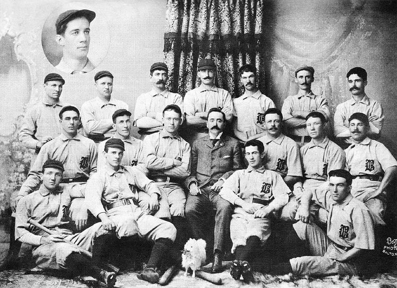

Contando um pouco da história do baseball
A evolução do basebol, com origem nos jogos onde apenas se lançava a bola, é imprecisa. Um manuscrito francês do século XIV contém a ilustração de um jogo semelhante ao basebol. Outros antigos jogos franceses parecem estar ligados ao basebol. Um consenso é que o atual jogo de basebol, desenvolvido na América do Norte, é fruto do jogo de rounders, popular na Grã-Bretanha e na Irlanda. A mais antiga referência ao basebol data de 1744, no Reino Unido. Esse jogo provavelmente foi levado à América por imigrantes britânicos. O jogo de rounders também veio para a América através de imigrantes. A primeira referência americana a uma partida do jogo é de 1791, em Pittsfield, Massachusetts.[5] Um livro alemão de 1796 registra um jogo chamado de Base-ball entre dois times. Já na metade do século XVIII, relatos de jogos parecidos com o atual basebol se espalharam por toda a América do Norte. Segundo uma comissão, Abner Doubleday inventou o jogo na cidade de Cooperstown, no estado de Nova Iorque, em 1839.[6] Em 23 de Setembro de 1845, Alexander Cartwright, bombeiro de Nova Iorque, o verdadeiro "pai" do baseball moderno, funda o famoso Knickerbocker Base Ball Club of New York. Escreveu e desenvolveu as primeiras 20 regras, as Regras Knickerbocker.
Beisebol no Brasil
Apesar de ser chamado esporte de japoneses, o basebol foi levado ao Brasil, a partir de 1850, por norte-americanos que trabalhavam em empresas como Light, Companhia Telefónica, Frigorífico Armour e funcionários do consulado dos Estados Unidos. Relatos afirmam que as partidas organizadas pelo Mackenzie College, em 1910, atraiam mais público que os jogos de futebol. Diversas equipes de basebol surgiram entre os anos 1910 e 1920, todas ligadas a agremiações de funcionários de empresas norte-americanas. Nos anos 1920 houve uma liga amadora comandada por um funcionário da companhia telefônica.[7] A influência japonesa começou com a chegada dos imigrantes japoneses em 1908, principalmente nos estados de grande colônia japonesa como São Paulo e do Paraná. Hoje em dia, grande parte dos praticantes do esporte no país são descendentes de japoneses. O primeiro campeonato brasileiro de beisebol, ocorreu em 1936, e a partir de 1946 até o ano de 2002 foram organizados pela Federação Paulista de Beisebol e Softbol. A partir de 2003, passou a ser organizado pela Confederação Brasileira de Beisebol e Softbol. O primeiro estádio oficial de beisebol do Brasil foi o Estádio Municipal de Beisebol Mie Nishi em São Paulo com capacidade para 2 500 pessoas. Ele foi construído em 1958 para os Jogos Pan-Americanos de 1963.